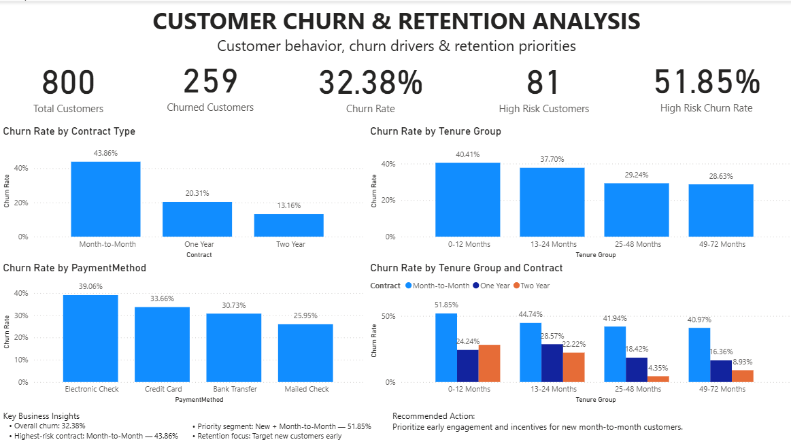

Project Overview
This project analyzes telecom customer data to understand churn patterns and identify customer segments that are more likely to leave the company.
The analysis combines Python for exploratory data analysis, SQL for business analysis, and Power BI for interactive visualization.
Business Objective
- Measure the overall customer churn rate.
- Identify customer segments with higher churn risk.
- Analyze churn by contract type and tenure.
- Identify opportunities for improving customer retention.
- Present insights through an interactive dashboard.
Key Results
32.38%
Overall Churn Rate
43.86%
Month-to-Month Churn
800
Total Customers Analyzed
Tools Used
Analysis Performed
- Cleaned and explored customer data using Python and Pandas.
- Analyzed churn distribution and customer characteristics.
- Used SQL to analyze churn across contract and tenure groups.
- Created Power BI visualizations to communicate churn patterns.
- Identified high-risk customer segments for retention efforts.
Key Insights
Month-to-month customers have the highest churn rate at 43.86%, compared with 20.31% for one-year contracts and 13.16% for two-year contracts.
Customers with shorter tenure show higher churn, indicating that the early customer experience is an important retention opportunity.
Customers with shorter tenure and higher-risk contract characteristics should be prioritized for proactive retention campaigns.
Power BI Dashboard
Interactive dashboard showing overall churn, contract-based churn, tenure analysis, and high-risk customer segments.

Business Recommendations
- Focus retention efforts on month-to-month customers.
- Improve onboarding and early engagement for new customers.
- Encourage customers to move to longer-term contracts.
- Target high-risk customers with proactive retention offers.
Project Repository
View the complete project files, SQL analysis, Python notebook, and Power BI dashboard on GitHub.
View GitHub Repository